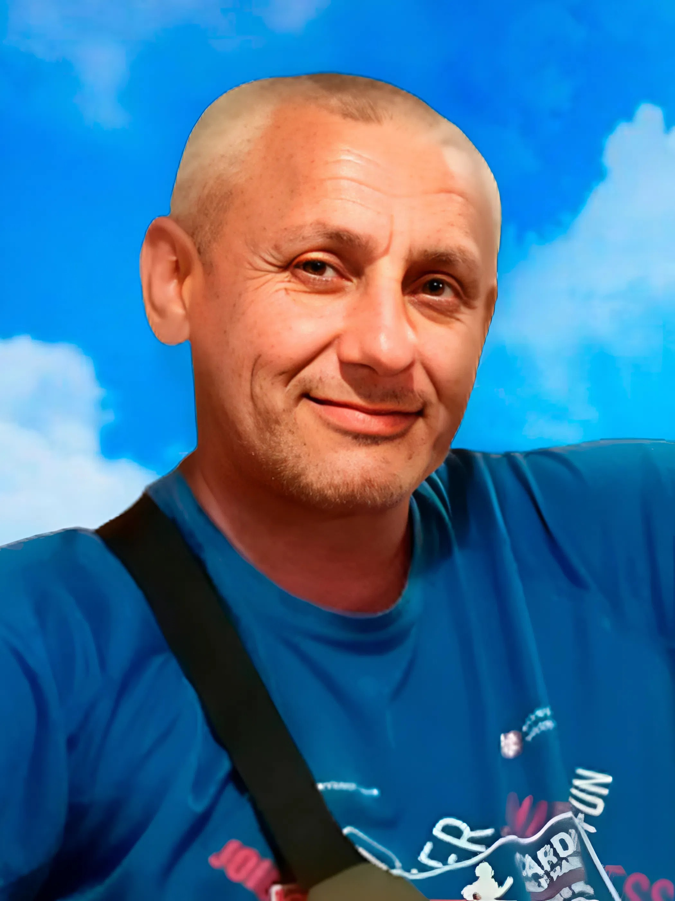

Я єсть Народ, якого Правди сила ніким звойована ще не була

(01.06.1980 – 17.06.2024 рр.)
Народився 1 червня 1980 року в місті Березівка Одеської області.
У 1986 році пішов до першого класу місцевої школи. Особливо любив працювати з комп’ютером, створювати програми й мріяв пов’язати своє майбутнє з цією сферою. У 1997 році закінчив 11 клас Березівської середньої школи.
Дитинство Івана пройшло в Березівці разом із мамою Галиною Сергіївною, бабусею Ніною Денисівною та сестрою Катериною. Сестра згадує його як надзвичайно позитивну людину, яка завжди бачила лише добре й світле. Іван любив допомагати людям, був працьовитим. Йому подобалося ремонтувати побутову техніку та інструменти. Знайомі казали: «Він міг зробити із нічого цукерку».
З червня 1998 по жовтень 1999 року проходив строкову службу.
У 2000–2002 роках працював колійником на залізниці, у 2003–2004 роках — слюсарем, а з 2004 по 2005 рік — охоронником‑експедитором у ПОФ «Варяг». З 2005 по 2011 рік продовжив працювати охоронником‑експедитором у ПОФ «Райзінг». З 2014 року працював будівельником за договором.
У 2012 році навчався у Березівському ВПУ ОНПУ, а у 2014 році здобув професію електрозварника ручного зварювання.
У 2022 році Іван став на захист Батьківщини. За час війни був двічі поранений. Навіть перебуваючи в лікарні, не міг сидіти без справи — намагався переконати медичний персонал облаштувати пандус, щоб пацієнтам було зручніше пересуватися. Він був людиною з доброю душею.
17 червня 2024 року, перебуваючи у відпустці вдома після поранення, передчасно зупинилося серце навідника кулеметного взводу 2‑ї стрілецької роти стрілецького батальйону, хороброго березівчанина Івана Анатолійовича Бондаря. Йому назавжди 44 роки.
Це гірка втрата та нестерпний біль для рідної сестри Катерини та близьких Івана.
Похований із військовими почестями на Алеї Слави в Березівці